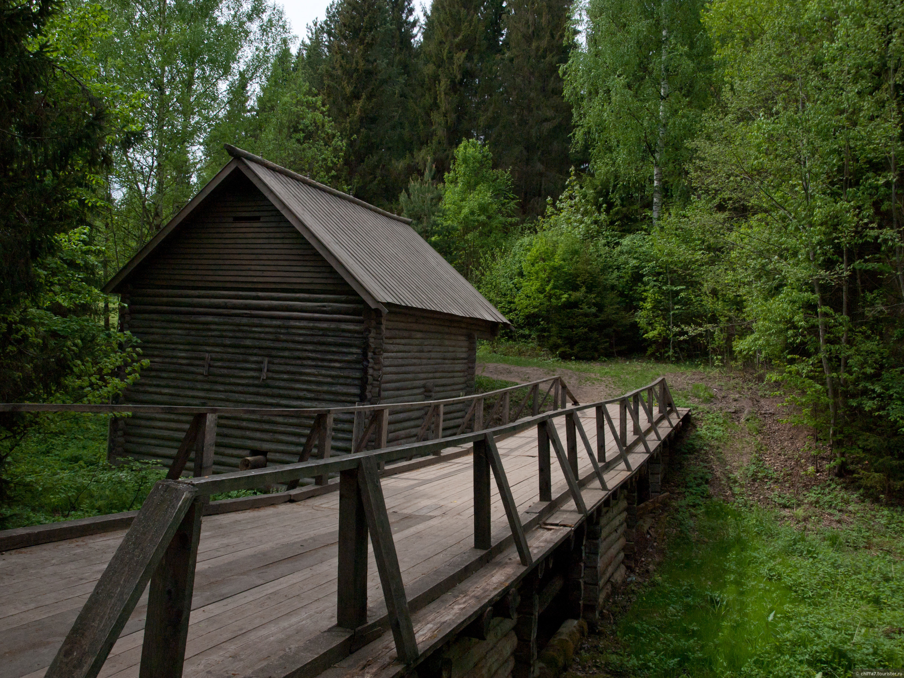
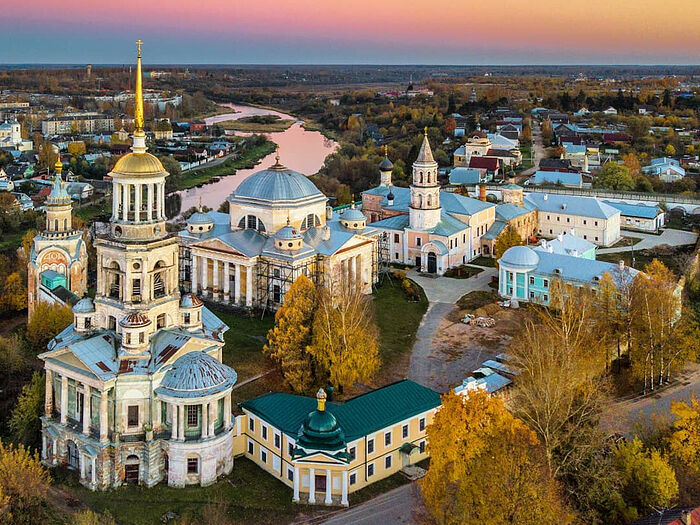
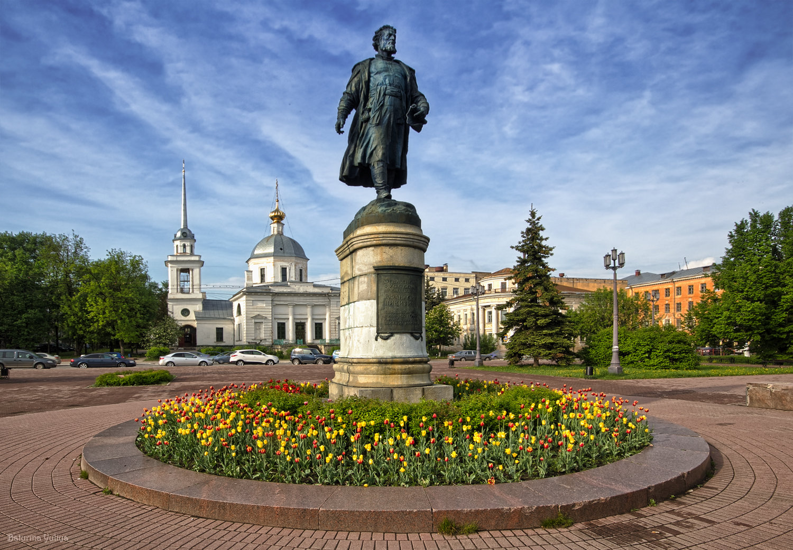
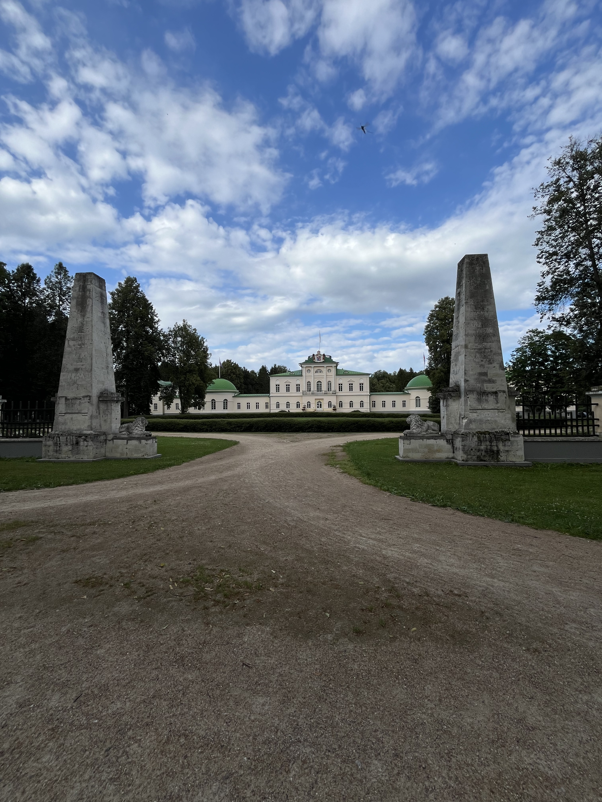

Тверская область
Добро пожаловать в одну из самых древнейших русских областей. Во времена Древней Руси Тверское княжество не уступала ни Новгродскому, ни Москвоскому. В Российской империи Тверьское княжество, а точнее Тверская губерния, не потеряла своей значимости, здесь расположенно множество родовых имений русской знати. Во время Советского Союза на долю Калининской области(с 1935 по 1990 Тверская область была Калининской, а Тверь носила название Калинин) выпало множество испытаний. Во время Великой Отечественной войны здесь велись ожесточённые бои, оссобенно подо Ржевом.
Василёво
Василёво - бывшая усадьба Львова(Д. Львова), а сейчас музейный комплекс под открытым небом, а так же место проведения фестиваля(реконструкции) "Новоторжский рубеж". Музейный комплекс насчитывает 14 срубов, один флигель и каскадную систему из трёх прудов, а так же "Чёртов мост", на котором сняли одну из сцен "Ночного дозора". На противоположном берегу реки Тверцы находится усадьба Николая Александровича Львова, уроженца Тверской области и известного архитектора.
Торжок
Торжок - провинциальный город на берегу реки Тверцы, известный своим золотошвейным промыслом с XIII века. В Торжке останавливались не раз Гоголь, Жуковский, Тургенев и Пушкин, который здесь нашёл имя для героя своего романа. Так же Торжок известен Пожарскими котлетами, которые похвалил Император Николай I
Тверь
Тверь была основана в 1135 году на слияние двух рек Волги и Тьмаки. В 1238 году Тверь разорили войска хана Батыя, но гроод быстро восстановился. В 1247 стала столицей Великого княжества Тверского. Город быстро рос, так как находился на важном торговом пути и в 1264 стал столицей Тверского и Владимирского княжеств. Свидетельством возросшей мощи Твери стал тот факт, что в 1293 году монголо-татарский полководец Дюдень не решился штурмовать город. За это время Тверь несколько раз сгорала, но это не мешало ей развиваться. В твери родился и жил известный путешествинник и писатель Афанасий НикитинЮ он первым описал иностранную поездку не как поломничество, а с экономической точки зрения.
Степаново-Волосово
Степаново-Волосово - усадьба конца XVIII века, князей Куракиных, находится восточнее Зубцова, на землях, подаренных роду Куракиных при присоединении Твери к Москве в начале XVI века
